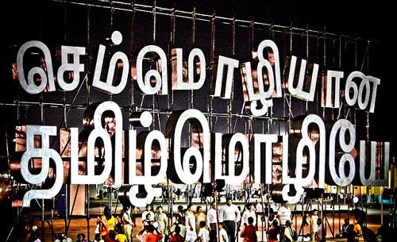
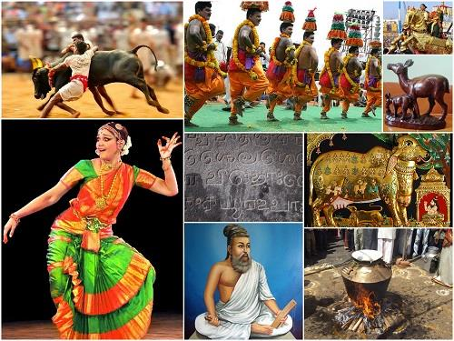
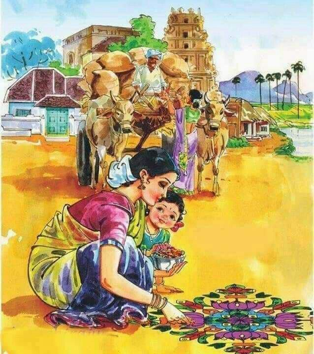
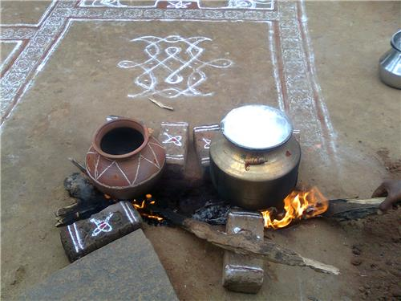
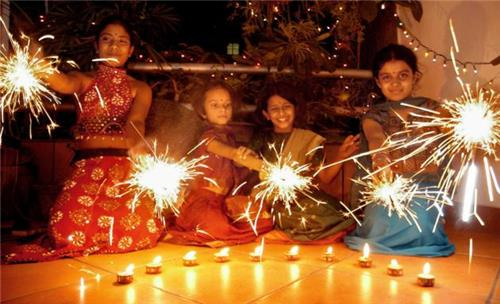
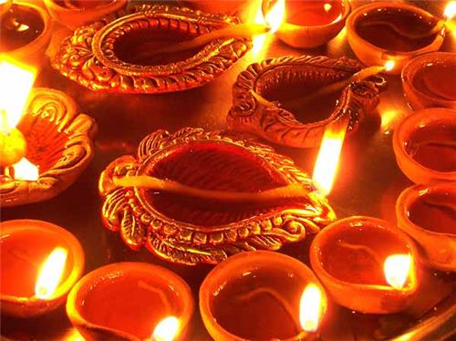
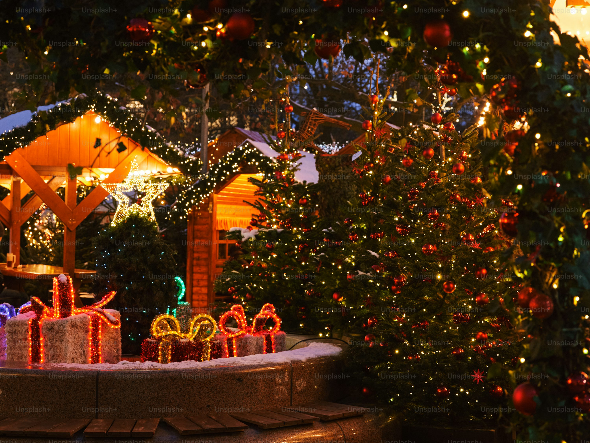
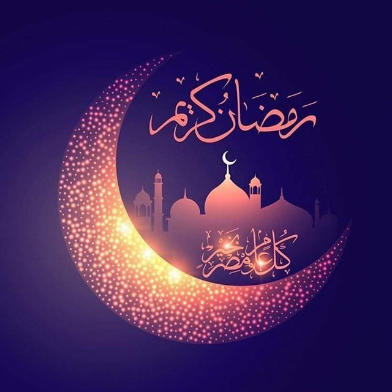

Tamil Nadu is a southern Indian state that has a remarkably rich cultural legacy.The people of Tamil Nadu are members of the famous Dravidian Family, which is regarded as one of the oldest civilizations in the world. Tamilians take great pleasure in their deeply ingrained culture and work very hard to preserve their 2000-year-old heritage, much like other South Indians do. The state has prospered since it was controlled by the Cholas, Pandyas, and Pallavas. They produced the architecture and art that are still in use and maintained today
Tamil culture is deeply rooted and firmly fixed in the art forms and ways of life of Tamilians living all over the globe. To be precise, the illustrious Tamil culture is well exhibited through sculpture, traditions, philosophy, rituals, folk arts, literature, painting, establishments, festivities, architecture, language, religions, martial arts, sports, cuisine, dance forms, costumes, media, music, science, theatre, comedy, technology and so on. Furthermore, the southern state assumes an important berth in the cultural map of our country.
Tamizh, often written as Tamil has been fundamentally a Dravidian language. Dravidic language is nothing but a large family of languages spoken in south and central India and Sri Lanka, Nepal, Singapore and a few other Asian countries. Tamil language is regarded as one of the longest existing classical languages in the world. As a matter of fact, 2,200 years old Tamil-Brahmi letterings have been discovered at Samanamalai (Madurai district in Tamil Nadu).
The classical language has been distinguished as the exclusive language of modern-day India, which is continuing in time with a classical history. Also, the oldest Tamil letters inscribed in the Tamil-Brahmi script has been discovered at Pahani (Dindigul district in Tamil Nadu), dated to 540 BCE - the oldest recognized Brahmi letterings on the Indian sub-continent. During the year 2004, the Government of India declared Tamil as a classical language, thus becoming the first legally distinguished Classical language of India.

Some of the notable dialects of Tamil language include Kongu Tamil, Central Tamil dialect, Nellai Tamil, Madras Bashai and Batticaloa Tamil dialect, Madurai Tamil, Jaffna Tamil dialect, Negombo Tamil dialect (Sri Lanka). Sankethi dialect in the neighboring state of Karnataka has been influenced by Kannada to a great extent. Apart from the diverse dialects, the classical language of Tamil demonstrates different forms

| Aspect | Description |
|---|---|
| Language | Tamil, one of the oldest Dravidian languages. |
| Religion | Primarily Hinduism, with significant presence of Jainism and Christianity. |
| Music | Carnatic music, a prominent classical tradition. |
| Dance | Bharatanatyam (classical), Koothu (folk theatre), and various folk dances. |
| Festivals | Pongal (harvest festival), Thaipusam (Murugan), Deepavali (festival of lights), Navaratri (nine-day celebration). |
| Cuisine | Rice-based dishes, with curries, sambar, and dosas being popular. |
| Arts | Sculptures, paintings, pottery, and weaving. |
| Architecture | Granite temples with intricate carvings and towering gopurams (towers). |
| Literature | Rich history of poetry, prose, and drama in Tamil. |


The festival is a four-day festival that is usually celebrated from the last day of the Tamil month Maargazhi to the third day of the Tamil month Thai (January 13th to January 16th). The first day is observed as Bhogi pandigai where people throw away old stuffs and focus on new things. The second day of the Pongal festival is the main festival day where people prepare a sweet dish called Chakarai pongal in traditional clay pots and offer it to Sun god as a symbol of gratitude. The third day of the Pongal festival is called as Maatu pongal where people decorate their cattle and thank them for their role in agriculture. The fourth and the last day of Pongal festivites is observed as Kaanum pongal where people gather with their friends and family and share a good time.

The festival of lights, Deepavali in Tamil Nadu marks the destruction of Narakasura at the hands of Lord Krishna. Deepavali is celebrated on the 14th day coming before the amavasya (new phase of the moon) in the Tamil month of Aippasi. Deepavali in Tamil Nadu is all about oil baths, new dresses, poojas, sweets, crackers, mouth-watering food and so on.

Popularly called as Kathikai Deepam in Tamil Nadu is celebrated in the month of Tamil month Karthikai. A Hindu festival, Karthikai is celebrated by lighting traditional agal vilaku. The illuminated agal villaku is regarded as an prosperous symbol. It is considered to forestall evil forces and bring prosperity.

Christmas is primarily celebrated to commemorate the birth of Jesus Christ, a central figure in Christianity. It's a time of joy, love, and togetherness, evolving into a universal celebration that transcends religious boundaries. The holiday is marked by various traditions, including exchanging gifts, decorating Christmas trees, and spending time with family and friends.

Ramadan is celebrated by Muslims worldwide to mark the beginning of the Quran's revelation to Prophet Muhammad and is a time for spiritual reflection, fasting, and increased religious observance. It is considered one of the most important holidays in Islam.